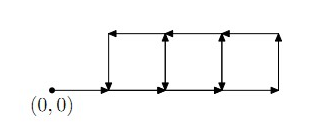

第一行 N
接下来N行 每行先一个整数Ci表示命令数 接下来Ci个命令
初始在(0, 0)
给你N个命令串 每个命令串包含若干命令
每个命令形式是 GO LEFT RIGHT Fk之一
GO 往前走1
LEFT 左转90度
RIGHT 右转90度
Fk 执行第k个命令串
f1: GO F2 GO F2 GO F2
f2: F3 F3 F3 F3
f3: GO LEFT
命令轨迹如图

Sample Input1
3
6 GO F2 GO F2 GO F2
4 F3 F3 F3 F3
2 GO LEFT
Sample Output1
5
Sample Input2
1
2 GO F1
Sample Output2
Infinity
HINT
N<=100
Ci<=100